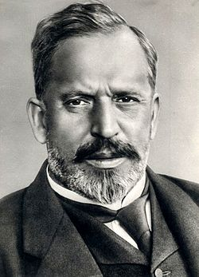

Bánki Donát
Munkássága
A budapesti Mûegyetemen szerzett gépészmérnöki diplomát. Az iparban helyezkedett el szerkesztõmérnökként (MÁV gépgyár, majd Ganz-gyár). Az egyetemen 1879–80-ban a mûszaki mechanika tanszéken tanársegéd volt, majd 1899-tõl haláláig a hidrogépek, kompresszorok és gõzturbinák szerkezettanának professzora.
Munkássága szorosan összekapcsolódott Csonka Jánossal, akivel együtt 1890-re kifejlesztették az ún. Bánki-Csonka motort, amely a Ganz-gyár nemzetközileg is versenyképes terméke volt. A Pallas nagy lexikona szerzõinek egyike volt 1893-tól. 1893. február 11-én Csonkával együtt szabadalmaztatta a fúvókás benzinkarburátort (porlasztót), megelõzve ezzel a külföldön általánosan úttörõnek tartott Wilhelm Maybachot. 1894-ben szabadalmaztatta az elsõ nagynyomású robbanómotort, a saját korában méltán világhírû Bánki-motort, amelynél a robbanókeveréket a hengerbe porlasztott vízzel hûtötte le, s ezzel a motor hatásfokát korábban nem remélt mértékben sikerült fokoznia.
Mind a kompresszió-növelés, mind a vízbefecskendezés elsõként Bánki által tisztázott elvét késõbb is alkalmazták, bár a Bánki-motor elterjedését a néhány évvel késõbb megjelent dízelmotor megakadályozta. Az általa 1917-ben feltalált Bánki-turbina új utakat nyitott a törpe vízierõmûvek fejlesztésében. 1918-ban nagyszabású tervet dolgozott ki a Vaskapu vízerejének hasznosítására.
A Magyar Tudományos Akadémia levelezõ tagja volt 1911-tõl. A vízturbináért Bánkit halála után négy évvel 1926-ban a Magyar Tudományos Akadémia nagyjutalmával tüntette ki. Irat- és kézirathagyatékának nagy része a BME OMIKK Levéltárában digitalizálva is megtalálható. Jelentõs gépszerkesztõi munkássága, szabadalmi tevékenysége mellett nagy hivatástudattal látta el oktatói feladatait. Nagy hangsúlyt fektetett arra, hogy a hallgatók felkészülését elõadásjegyzetekkel is segítse. Egyetemi tanári tevékenysége során a mérnökképzésben bevezette a laboratóriumi képzést.
Írásai
Írásaiban fõként a gázmotorok elméletével, a gõzturbinák és hidrogépek szerkesztési alapelveivel foglalkozott.
· Gyakorlati hidraulika és hidrogépek (jegyzet, I–II., Bp., 1901–02);
· Gõzturbinák. Légsûrítõ gépek (kõnyomat, Bp., 1903);
· Energiaátalakulások folyadékokban (Bp., 1916, németül: Berlin: 1921);
· Neue Wasserturbine (Berlin, 1917);
· A Vaskapu-vízierõmû tervezete (I–II., Bp., 1918);
· Dugattyús szivattyúk és kompresszorok gépszerkezettana (Bp., 1932).
Emlékezete
· Az elsõ benzinporlasztót a Mûszaki Emléket Nyilvántartó és Gyûjtõ Csoport õrzi.
· A Bánki-Csonka-motor elsõ példánya ma a Budapesti Közlekedési Múzeumban látható.
· Több oktatási intézmény névadója
· Óbudai Egyetem Bánki Donát Gépész és Biztonságtechnikai Mérnöki Kar
· Bánki Donát Közlekedésgépészeti Szakközépiskola és Szakiskola
· Bánki Donát Szakképzõ Iskola Ajka
· Bánki Donát Gimnázium és Szakközépiskola Dunaújváros
· Pécsi Bánki Donát utcai Általános Iskola
· Bánki Donátról elnevezett kisbolygó, a 131763 Donátbánki
· Szülõfalujában, Bakonybánkon a Bánki Donát Mûszaki Egyesület õrzi a feltaláló emlékét.
· Születésének 150. évfordulójára a Magyar Nemzeti Bank emlékpénzt adott ki.
A Bánki-emlékérem
Emlékére a Gépipari Tudományos Egyesület 1955-ben három fokozatú, díjazással egybekötött, évenként kiosztott mûszaki kitüntetést alapított.
Diák-nóta
A mûegyetemi hallgatók alábbi nótája is szeretettel emlékezik tanárukról:
Hidrogépek, kompresszorok, turbinák…
Bánkinak a Laval-csövön azt fújják:
Expandálnék, hej de nem tudok,
Mert az izotermám nagyon kanyarog.
